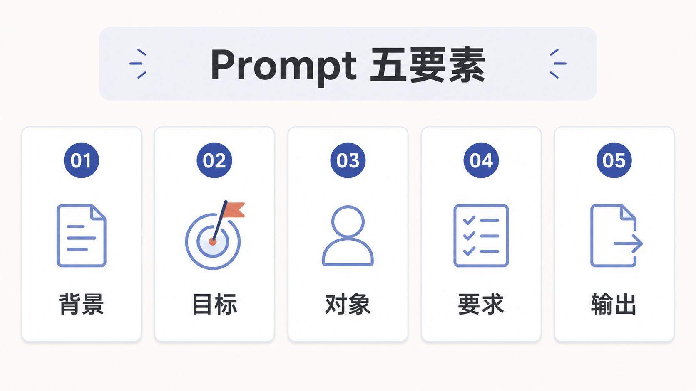
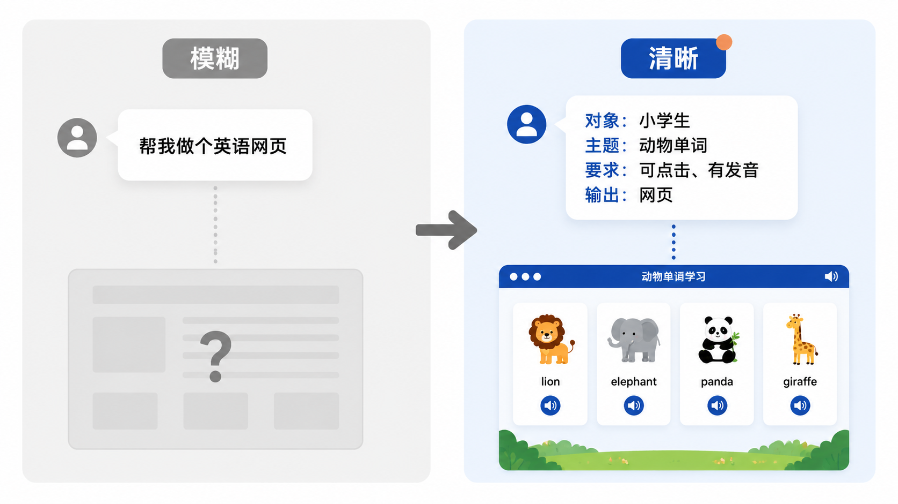
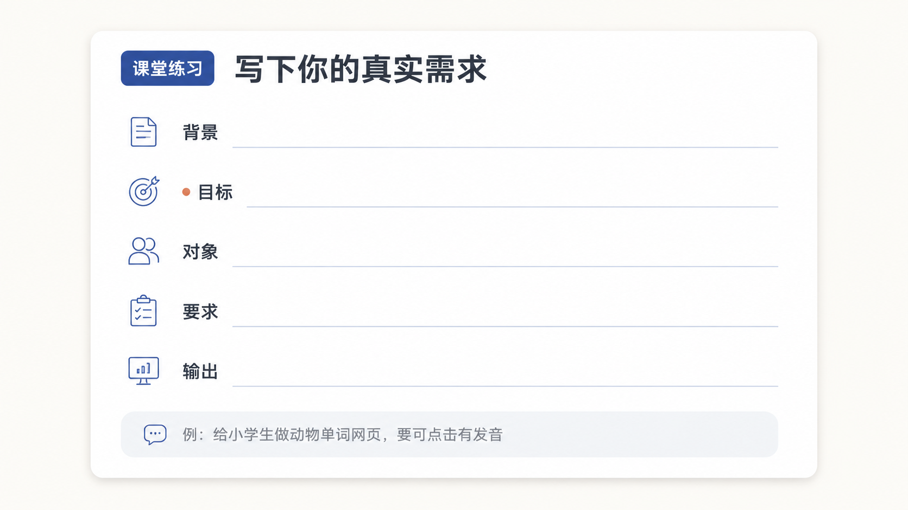

第 3 节
什么是提示词 Prompt
本节目标
让学生学会把模糊想法说清楚，能立刻写出可用 Prompt。
建议时长：12 分钟
很多人用 AI 效果一般，不是因为模型太差，而是因为自己给出去的任务太模糊。你对人说话都需要把意思讲清楚，对 AI 当然也一样。所以 Prompt 不是神秘咒语，也不是“越长越高级”的一段话。Prompt 本质上就是任务表达，是你交给 AI 的一份清楚说明书。
在课堂上，我最喜欢用一句很简单的话来解释 Prompt：Prompt 不是让 AI 猜你的心思，而是让 AI 明白你的心思。

为了让初学者马上上手，我们把 Prompt 拆成五个最容易记住的部分。先说背景，让 AI 知道你现在是什么场景；再说目标，让 AI 明白你要完成什么；接着说对象，也就是内容是给谁看的；然后说要求，包括风格、限制、必须保留的内容；最后说输出，让它知道你最终想要的是什么格式。
这五部分一旦完整起来，你会发现，原本“模糊的一句话”就开始长出可执行的边界。举个最简单的例子，如果你只说“帮我做个英语网页”，模型其实只能大概猜；可如果你说“为小学三年级学生制作一个单文件动物英语学习网页，包含五个单词、中文释义、点击发音按钮和选择题小游戏，页面要适合电脑和手机浏览器，最终输出一个可直接打开的 HTML 文件”，那么 AI 的工作方向就立刻清晰了。
flowchart LR
A[模糊需求] --> B[补全背景]
B --> C[明确对象与目标]
C --> D[加入要求与限制]
D --> E[明确最终输出]
E --> F[得到更稳定结果]
到这里，请大家一定要有一个新的判断标准：好 Prompt 不一定长，但一定清楚。它不追求华丽，而追求可执行。很多同学刚开始会紧张，觉得自己不会写 Prompt。其实只要你能把需求说给一个认真负责的助理听明白，你就已经会写 Prompt 了。
为了让你真正把这件事做出来，我们现在把刚才的五要素落到一个可以直接复用的课堂模板上。你可以这样写：我现在要做什么，给谁用，已经有什么材料，必须满足哪些要求，最后请输出什么。这个模板看上去很朴素，但它是最适合新手稳定起步的方式。

屏幕演示建议
这一节适合做一个很短但非常直观的对比实验。先输入一句模糊 Prompt，例如“帮我做一个英语学习网页”；展示模型给出的含糊结果。然后再输入结构化版本，让学生看到结果明显更可控。演示的重点不是追求最终网页一次生成成功，而是让学生看懂：表达越清楚，结果越稳定。
本节跟做
请每位学生把第一节写下的“真实任务”重新整理成一条 Prompt。你不必追求写得华丽，只要把背景、目标、对象、要求和输出说清楚即可。完成之后，可以互相交换着看一眼，判断一下：这条 Prompt 能不能让另一个人也清楚知道任务是什么？如果能，基本就已经合格了。
本节小结
这一节最重要的收获，不是记住 Prompt 这个英文词，而是学会一种表达方式：当你越能把任务讲清楚，AI 就越像一个靠谱的协作对象。 下一节我们要继续往前走，看看为什么有的 AI 只能“说”，有的 AI 却能“做”，也就是 LLM 和 Agent 的区别。